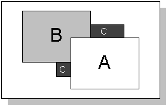
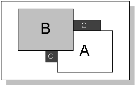
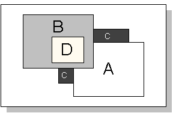
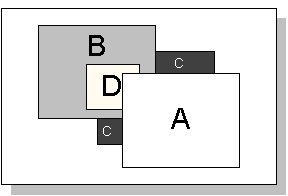

|
| |
All windows in the window server have an ordinal position which describes their z-order, i.e. their ordering from nearest the viewer to furthest away from the viewer. Each window’s ordinal position is relative to its parent window and is unique among its siblings.
Ordinal positions are positive integers starting at 0, with 0 being the front-most position. A window with an ordinal position of 0 will be displayed in the foreground, i.e., in front of all its sibling windows. The ordinal position of other windows increases by one for each position behind this window.
When a window is created, it is automatically given an ordinal
position of 0 within its parent window. Then, when another child of the same
parent is created, the first window’s ordinal position will change to 1,
and the new window’s position will be 0. These ordinal positions can be
changed after the windows have been created, using functions provided by the
RWindowTreeNode class.
When a window's ordinal position is changed, its order in the sibling
list is also changed, so that the window with ordinal position 0 is always
first in the sibling list, the window with ordinal position 1 is next in the
list, and so on. Changing the ordinal position of windows therefore affects the
result of the RWindowTreeNode::Parent(), RWindowTreeNode::Child(),
RWindowTreeNode::NextSibling() and RWindowTreeNode::PrevSibling() functions.
To give an illustration of how ordinal positions work, the diagram below shows three windows, A, B and C, all belonging to the same window group. Their ordinal positions are as follows: A=0; B=1; C=2.

This would be the default ordering of the windows if they were created in the order CBA. Many sibling windows within an application may not overlap in practice: nevertheless, each window has a unique ordinal position, even though this will not be evident in the way they are displayed.
If a window’s ordinal position is changed, its position on the screen will change. All its child windows also move with it, although their ordinal positions, which are relative to the parent, don’t change.
A window is moved to the front (i.e., to the foreground) by giving it an ordinal position of 0. The diagram below shows windows A, B and C, but window B has now been given an ordinal position of 0. A’s position has been incremented to 1, and C’s remains as 2.

The diagram below shows the same three windows as above, except that window B now contains a child window, D. Window D’s ordinal position is 0, relative to its parent window, B.

If window A is now moved to the front, window B moves behind it, as shown in the diagram below. Window D’s ordinal position is still 0, but because its position always remains relative to its parent window, it moves with window B to behind window A.

|
If a window is given an ordinal position greater than all its siblings, it will be moved to the back of them. For convenience, the functions for setting ordinal position allow a negative ordinal position to be specified, which sends the window to the back and sets its ordinal position to be the highest among its siblings.
|
The ordinal position of a window group has special significance because there is normally one window group per application. As a result, the z-order of applications on the screen is typically determined by the ordinal positions of their window groups: for example, giving a window group an ordinal position of 0 will typically bring an application to the front of the screen. Note, however, that window groups also have a priority, which overrides ordinal position. Ordinal position only applies among window groups of the same priority.
The ordinal position of window groups is typically controlled by a
shell or similar application: the RWsSession class provides
functions for such applications to set window group ordinal positions.
|
When a window group is given an ordinal position of 0, it is
automatically given keyboard focus, unless it has disabled keyboard focus by
calling EnableReceiptOfFocus(EFalse), or another window group has
a higher priority.
Copyright ©2002 Symbian Ltd. 6.1-00174 |
|